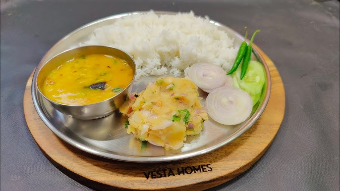

Dhaal Bhaat

Daal bhaat is a traditional South Asian staple consisting of steamed rice (bhaat) and a soupy, spiced lentil curry (daal). Often served with vegetable curries, pickles (achar), and sometimes meat(non-vegetarian), it is the cherished national dish of Nepal and a comforting, everyday meal across India and Tibet.
Ingredients
For the Bhaat(rice)
- white rice: basmati or long grain
- water: for boiling
For the Dhaal (lentils)
- lentils: Yellow split peas, red lentils (masoor), or split mung beans
- wather and broth: for simmering
- turmeric powder: for color and earthiness
- salt: to taste
For Tadka (tempering spices)
- ghee or oil: to fry spices
- cumin seeds: for aroma
- garlic and ginger: finely minced
- onion: small, finely chopped
- green chilli: optional, for heat
Home